UDN
Search public documentation:
FBXSkeletalMeshPipelineCH
English Translation
日本語訳
한국어
Interested in the Unreal Engine?
Visit the Unreal Technology site.
Looking for jobs and company info?
Check out the Epic games site.
Questions about support via UDN?
Contact the UDN Staff
日本語訳
한국어
Interested in the Unreal Engine?
Visit the Unreal Technology site.
Looking for jobs and company info?
Check out the Epic games site.
Questions about support via UDN?
Contact the UDN Staff
FBX骨架网格物体通道
概述
- 应用了包含贴图的材质的骨架网格物体
- 动画
- 顶点变形目标
- 多个UV集合
- 平滑组
- 顶点颜色
- LODs
一般设置
单一网格物体和多部分网格物体
骨架网格物体可以由一个单独的、连续的网格物体构成或者它们也可以由植皮到同一骨架上的多个独立的网格物体构成。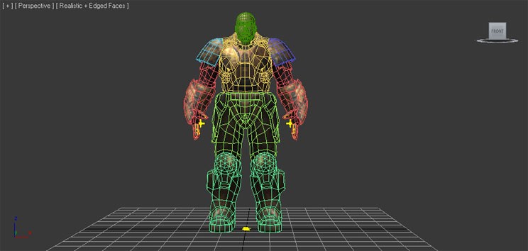
使用多个网格物体可以使得独立部分具有不同的LOD，并且可以独立地导出组成部分以便在模块化角色系统中使用。这样创建您的多个骨架网格物体不会导致性能消耗过多。当把独立的部分导入到虚幻编辑器时它们会组合到一起。Rigging(骨架绑定)
骨架绑定(Rigging)是指把网格物体绑定到 骨骼/关节的骨架层次结构上。这使得底下骨架的 骨骼/关节 可以影响网格物体的顶点，当骨骼或关节移动时会使得网格物体发生变形。骨架
根据您的个人喜好和所使用的3D应用程序的不同，有各种创建骨架的方法。 3dsMax 如何在3dsmax中创建骨架层次结构由您自己决定。您可以使用标准的 Bones Tools(骨骼工具) ，因为它们很好用；或者创建您自己的对象层次结构从而完全地自定义几何体和控制。有很多给猫植皮的方法(开个玩笑)，也有很多指南告诉你如何为游戏角色创建动画绑定。您也可以参照3dsMax帮助获得关于如何使用这个工具的完整信息。 Maya
在Maya中，一般您会使用 Joint Tool(关节工具) 来为您的骨架网格物体创建骨架。同样，也有无数的关于在Maya中如何使用这个工具及创建绑定的指南。Maya帮助文档也是获得关于这个主题的信息的很好的资源。
Maya
在Maya中，一般您会使用 Joint Tool(关节工具) 来为您的骨架网格物体创建骨架。同样，也有无数的关于在Maya中如何使用这个工具及创建绑定的指南。Maya帮助文档也是获得关于这个主题的信息的很好的资源。
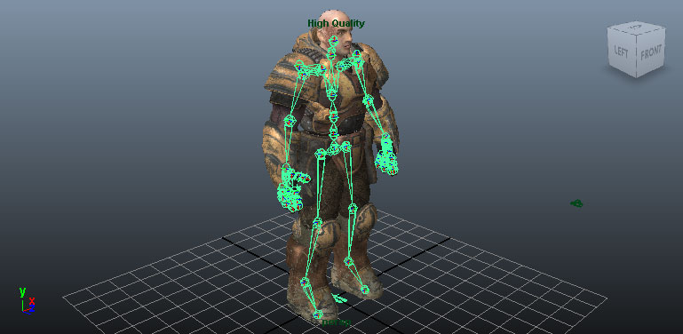
绑定
根据您使用的3D应用程序的不同，将网格物体绑定到骨架上的过程也有所不同。 3dsMax 在3dsMax中，网格物体必须使用 Skin(皮肤) 修改器绑定到骨架上。无论骨架网格物体是由一个单独的完整网格物体构成还是由多个网格物体部分构成，这个处理过程都是一样的。- 选择要绑定的网格物体。
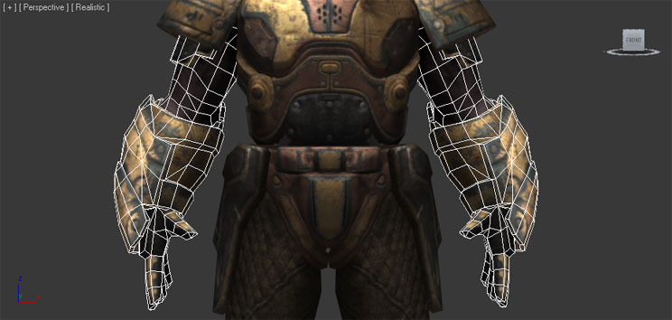
- 从 Modifier List(修改器列表) 中添加一个 Skin(皮肤) 修改器。

- 在 Skin(皮肤) 修改器的展开Parameters (参数)中，点击
 按钮来添加影响网格物体的骨骼。这时 Select Bones(选择骨骼) 窗口将打开。
按钮来添加影响网格物体的骨骼。这时 Select Bones(选择骨骼) 窗口将打开。
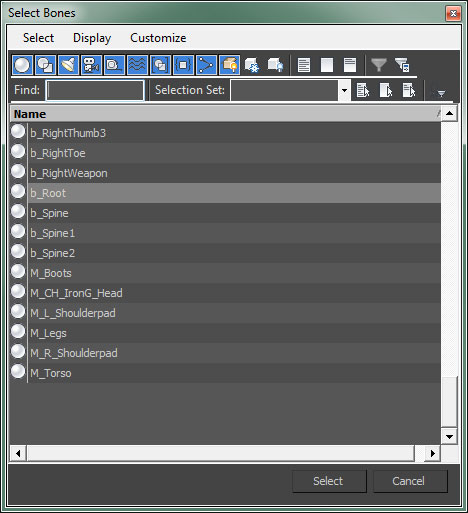
- 在 Select Bones(选择骨骼) 窗口中选择骨骼，并点击https://udn.epicgames.com/pub/Three/FBXSkeletalMeshPipelineCH/skin_select_button.jpg按钮来添加骨骼。

- 现在，骨骼显示在了修改器的 Bones(骨骼) 列表中。

- 现在，您可以为每个骨骼调整网格物体的顶点的权重，从而决定哪些顶点受到哪些骨骼的影响及影响的程度。这可以通过使用envelope(封袋)来完成，直接输入顶点的权重；或者您可以使用你喜欢的其他方法来完成。
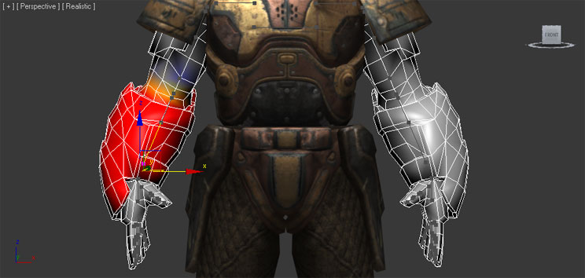
- 选择要绑定的网格物体。

- 按下Shift键并选择骨架的根关节。

- 从 Skin(皮肤) > Bind Skin（绑定皮肤） 菜单选择 Smooth Bind(平滑绑定) 。
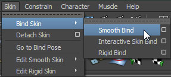
- 现在，您可以为每个关节调整网格物体的顶点的权重，从而决定哪些顶点受到哪些骨骼的影响及影响的程度。这可以通过使用 Paint Skin Wieghts Tool(描画皮肤权重工具) 来完成或者使用其他你喜欢的方法完成。

支点
虚幻引擎中，网格物体的支点决定了执行任何变换(平移、旋转、缩放)时所围绕的点。 骨架网格物体的支点总是位于骨架的 根骨骼/关节 处。这意味着骨架位于场景中的哪个位置并没有关系。当从3D建模应用程序中导出网格物体时，支点总是位于原点处(0,0,0)。
骨架网格物体的支点总是位于骨架的 根骨骼/关节 处。这意味着骨架位于场景中的哪个位置并没有关系。当从3D建模应用程序中导出网格物体时，支点总是位于原点处(0,0,0)。

三角化
虚幻引擎中的网格物体必须进行三角化处理，因为图形硬件仅处理三角形。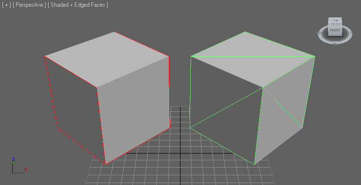
有很多三角化网格物体的方法。- 仅使用三角形建模网格物体 — 最好的解决方案，提供对最终结果最大控制。
- 在3D应用程序中三角化网格物体 - 较好的解决方案，允许在导出之前进行整理和修改。
- 让导入器三角化网格物体 - 一般解决方案，不允许进行清除整理但对于简单网格物体来说是有效的。
- 让FBX导出器三角化网格物体 - 一般解决方案，不允许进行清除整理但对于简单网格物体来说是有效的。
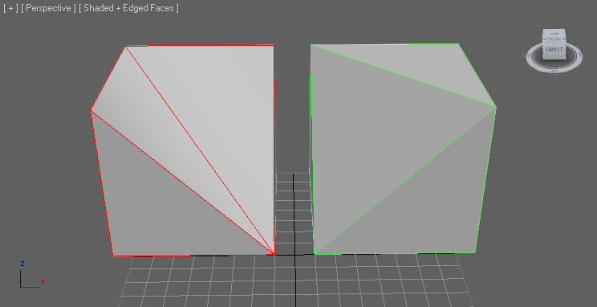
创建法线贴图
在大部分建模应用程序中可以通过创建低分辨率的渲染网格物体和高分辨率的细节网格物体来直接地为您的网格物体创建法线贴图。 高分辨率细节网格物体的几何体用于生成法线贴图的法线。请参照您使用的软件的文档获得关于如何生成法线贴图的确切过程。
高分辨率细节网格物体的几何体用于生成法线贴图的法线。请参照您使用的软件的文档获得关于如何生成法线贴图的确切过程。
材质
在外部应用程序中建模的应用到网格物体上的材质将会随着网格物体一同导出，然后会一同导入到UnrealEd中。这简化了导入过程，因为贴图不必再单独地导入到UnrealEd中，不需要再创建及应用材质等。当使用FBX通道时导入过程可以执行所有这些动作。 这些材质也需要以特殊的方式设置，尤其是当网格物体具有多个材质或者网格物体上的材质的顺序很重要时(也就是，对于一个角色模型，材质0需要用于躯体部分，材质1需要用于头部)。 关于设置材质进行导出的完整细节，请参照FBX材质通道页面。顶点颜色
骨架网格物体的顶点颜色(仅一组集合)可以通过FBX通道转换。不需要特殊设置。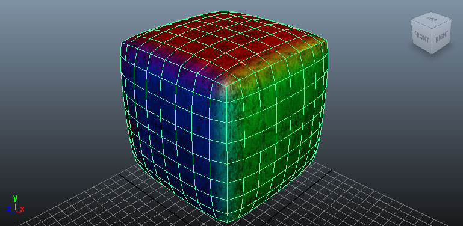
从3D应用程序中导出网格物体
- 在视口中选中要导出的网格物体和骨骼。

- 在 File(文件) 菜单中选择 Export Selected(导出选中项) (或者您不管选中项是什么而是想导出场景中的所有资源，那么则选择 Export All(导出所有) ) 。

- 选择要将网格物体导出到的FBX文件的位置及名称，并点击
 按钮。
按钮。

- 在 FBX Export(FBX导出) 对话框中设置适当的选项，然后点击
 按钮来创建包含网格物体的FBX文件。
按钮来创建包含网格物体的FBX文件。
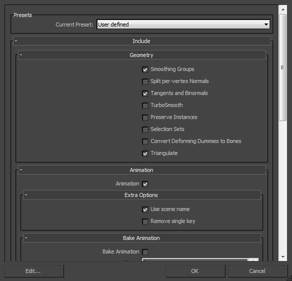
- 在视口中选中要导出的网格物体和关节。

- 在 File(文件) 菜单中选择 Export Selected(导出选中项) (或者您不管选中项是什么而是想导出场景中的所有资源，那么则选择 Export All(导出所有) ) 。

- 选择用于导入网格物体的FBX文件的位置和名称，并在 FBX Export(FBX导出) 对话框中设置适当的选项，然后点击
 按钮来创建包含网格物体的FBX文件。
按钮来创建包含网格物体的FBX文件。

导入网格物体
- 在内容浏览器中点击
 按钮。再打开的文件浏览器中导航到您想导入的文件并选中它。*注意:* 您可以在下拉菜单中选择
按钮。再打开的文件浏览器中导航到您想导入的文件并选中它。*注意:* 您可以在下拉菜单中选择  来过滤不需要的文件。
来过滤不需要的文件。
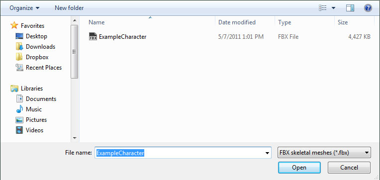
- 在 Import(导入) 对话框中选择适当的设置。但大部分情况下默认设置就足以满足需求。请参照 FBX导入对话框部分获得关于这些设置的完整信息。
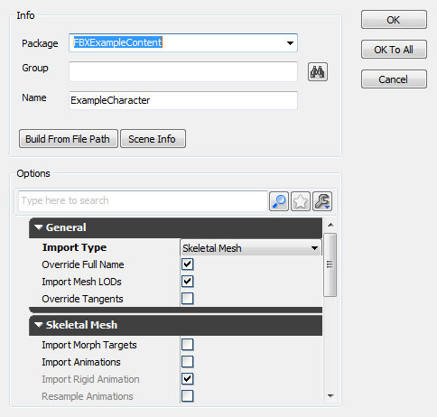
- 点击 按钮来导入网格物体。如果导入过程成功，那么将会在内容浏览器中显示最终的网格物体、材质和贴图。

通过在AnimSet（动画集）编辑器中查看导入的网格物体，您可以判定这个过程是否按照期望工作。如果您导入了兼容的动画，那么您可以选择一个动画并播放它，以确保正确地导入了网格物体。

骨架网格物体LOD
LOD设置
一般 一般，LODs通过创建具有不同复杂程度的模型来进行处理，包括从具有完整细节的基本网格物体到最有最低细节的LOD网格物体。这些LODs应该和相同的顶点对齐并占用相同的空间，并且应该植皮到同一个骨架上。也可以在3D应用程序中使用多个单独的网格物体来构成骨架网格物体。每个部分可以具有独立于其他部分的LODs。这意味着，在不同的LODs中某些部分可以是简化版本，而其他部分则继续使用较高的细节版本。每个LOD网格物体可以分配完全不同的材质，包括不同数量的材质。这意味着基本网格物体可以使用多个材质来在近距离处产生理想的细节质量；但低细节网格物体可以使用一个单独的材质，因为细节不是那么显著。 3dsMax- 选中所有网格物体(基本网格物体和LODs - 选中顺序不重要)，然后从 Group(组) 菜单中选择 Group(组合) 命令。
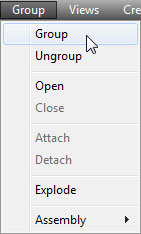
- 在打开的对话框中输入新的组的名称，并点击
 按钮来创建该组。
按钮来创建该组。
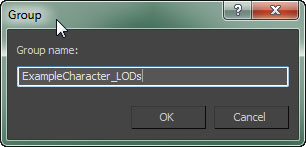
- 点击
 按钮来查看 Utilities(工具) 面板，然后选择 Level of Detail（细节层次级别） 工具。*注意:* 您可能需要点击
按钮来查看 Utilities(工具) 面板，然后选择 Level of Detail（细节层次级别） 工具。*注意:* 您可能需要点击  并从列表中选择它。
并从列表中选择它。
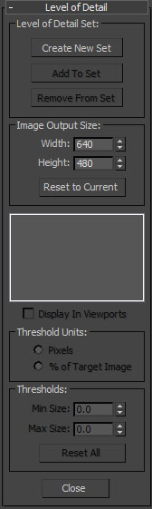
- 选中该组合，点击
 按钮来创建新的LOD集合，并将选中组中的网格物体添加到它内部。这些网格物体将会根据它们的复杂度自动地排序。
按钮来创建新的LOD集合，并将选中组中的网格物体添加到它内部。这些网格物体将会根据它们的复杂度自动地排序。
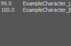
- 选中所有网格物体(基础网格物体和LODs)，按照从基础网格物体向下倒最低级LOD的书序进行选择。按顺序选择很重要，以便可以在复杂度方面以正确的顺序添加它们。然后从 Edit(编辑) 菜单中选择 Level of Detail（细节层次级别） > Group（分组） 命令。
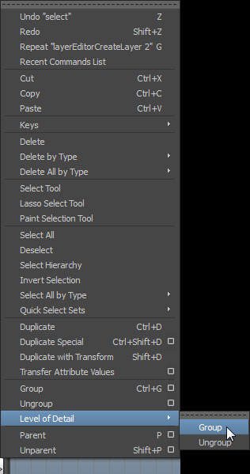
- 现在所有的网格物体都应该分组到了LOD Group（LOD组）下。

多部分网格物体LOD
设置由多部分构成的骨架网格物体的LOD几乎和为一个完整的网格物体设置LODs一样，但是这里需要为具有LODs的每个单独部分创建一个LOD组。设置这些单独的LOD组的过程上面介绍的过程一样。导出LODs
要想导出骨架网格物体LODs： 3dsMax- 选中要导出的构成LOD集合的成组的网格物体及其骨骼。

- 遵循导出基本网格物体所使用的同样的导出步骤进行操作(正如在上面的导出网格物体部分所描述的 )。
- 选择要导出的LOD组及关节。

- 遵循导出基本网格物体所使用的同样的导出步骤进行操作(正如在上面的导出网格物体部分所描述的 )。
导入LODs
在内容浏览器中，静态网格物体LODs可以随同基础网格物体一同导入，或者可以通过AnimSet编辑器单独地导入这些静态网格物体LODs。 网格物体和LODs同时导入- 在内容浏览器中点击 按钮。再打开的文件浏览器中导航到您想导入的文件并选中它。*注意:* 您可以在下拉菜单中选择 来过滤不需要的文件。
- 在 Import(导入) 对话框中选择适当的设置。确保启用了 Import LODs（导入LODs） 。*注意:* 当导入LODs时，导入的网格物体的名称将会遵循默认的命名规则。请参照 FBX导入对话框部分获得关于这些设置的完整信息。

- 点击 按钮来导入网格物体和LOD。如果导入过程成功，那么将会在内容浏览器中显示最终的网格物体、材质和贴图。

通过在动画集编辑器中查看导入的网格物体，您可以实用工具条中的
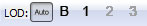
按钮来循环查看LODs。
- 通过在内容浏览器中双击基础网格物体或者右击并选择 Edit Using AnimSet Viewer(使用动画集查看器编辑) 来在动画集编辑器中打开基础网格物体。
- 在 AnimSet 编辑器的 File（文件） 菜单中，选择 Import Mesh LOD（导入 网格物体LOD） 。

- 在文件浏览器中导航到包含这个LOD网格物体的 FBX 文件，并选择它。*注意：* 您可能需要将文件格式设置为
 才能看到您的文件。
才能看到您的文件。
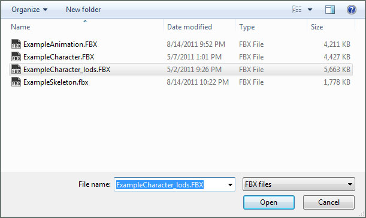
- 在 Import LOD（导入LOD） 对话框中，从下拉菜单中选中您想导入的网格物体的LOD级别。按下
 按钮来导入LOD网格物体。
按钮来导入LOD网格物体。
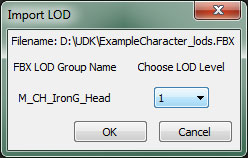
- 如果导入过程成功，那么将会通知您，并且在工具条按钮 中应该启用了刚导入的LOD对应的按钮。
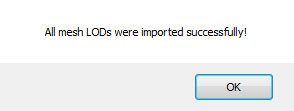
- 针对您想导入的每个LOD网格物体重复这个过程。
- 一旦导入了所有的LOD网格物体，您可以通过使用工具条中的 按钮来预览这些LOD网格物体。
从虚幻编辑器中将网格物体导出到FBX文件中
- 在内容浏览器中，选择你想导出的骨架网格物体。
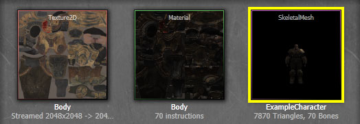
- 右击该骨架网格物体并选择 Export to File(导出到文件) 。
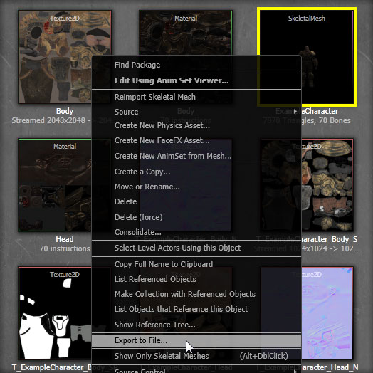
- 在出现的文件浏览器中选择要导出的文件的位置和名称。*注意:* 确保选择 FBX文件(*.FBX) 作为文件类型。
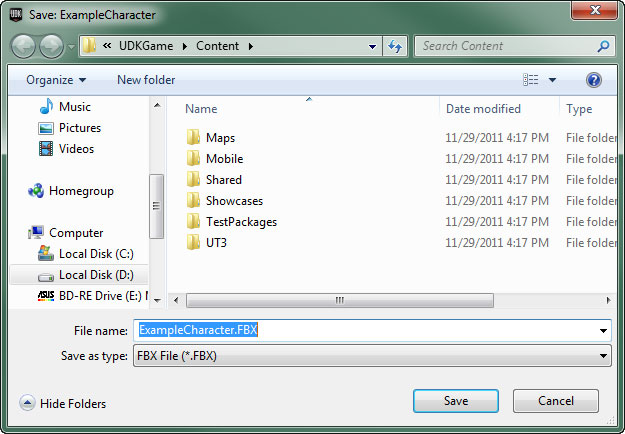